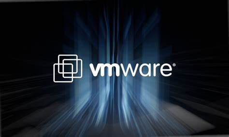
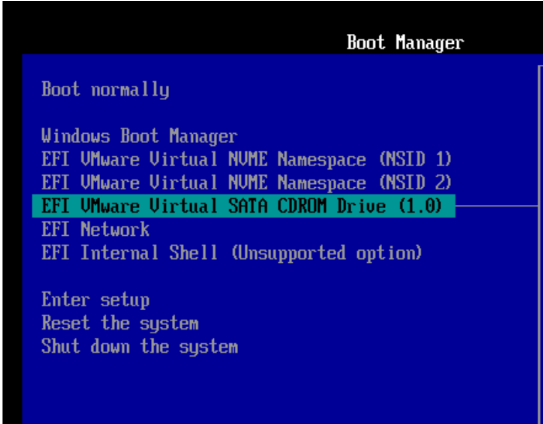
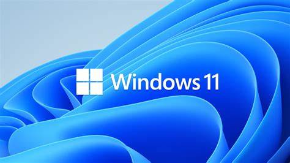
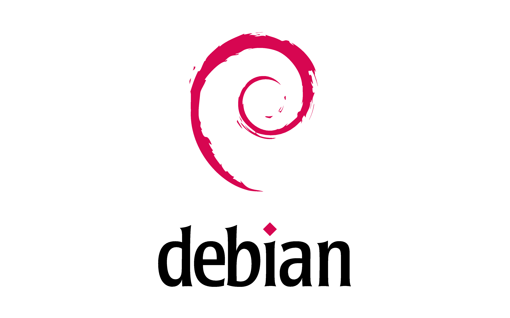

Contexte de Réalisation
Ce projet a été réalisé pour découvrir la spécialité Administration système et réseaux. Il avait pour objectif :
- D’explorer les bases de l’administration des systèmes d’exploitation comme Windows et Linux.
- D’utiliser des outils de virtualisation tels que VMware pour mettre en place un environnement multi-systèmes.
- De se familiariser avec les commandes essentielles et les principes fondamentaux de la gestion des réseaux.

Ce que j'ai réalisé
Voici les principales tâches effectuées lors de ce projet :
- Installation et configuration : Mise en place d’un dual-boot Windows 11 et Debian (Linux) dans un environnement virtuel avec VMware, utilisation du BIOS.
- Utilisation des interfaces graphiques et lignes de commande : Découverte des interfaces des deux systèmes et exécution de commandes essentielles dans les terminaux.
- Administration des comptes utilisateurs : Création, modification et suppression de comptes, gestion des droits d’accès.
- Installation de logiciels : Installation de navigateurs tels que Google Chrome sur Linux et Windows.
- Test de connectivité réseau : Utilisation de la commande
ping pour vérifier l’état du réseau et la communication entre les machines.

Technologies Utilisées
Voici les outils et technologies principaux employés dans ce projet :
- VMware : Outil de virtualisation pour exécuter plusieurs systèmes d’exploitation simultanément.
- Windows 11 : Système d’exploitation utilisé pour explorer les interfaces modernes et les outils d’administration.
- Debian (Linux) : Système d’exploitation open-source utilisé pour découvrir la gestion via terminal et les commandes réseau.

